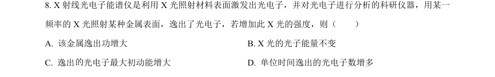
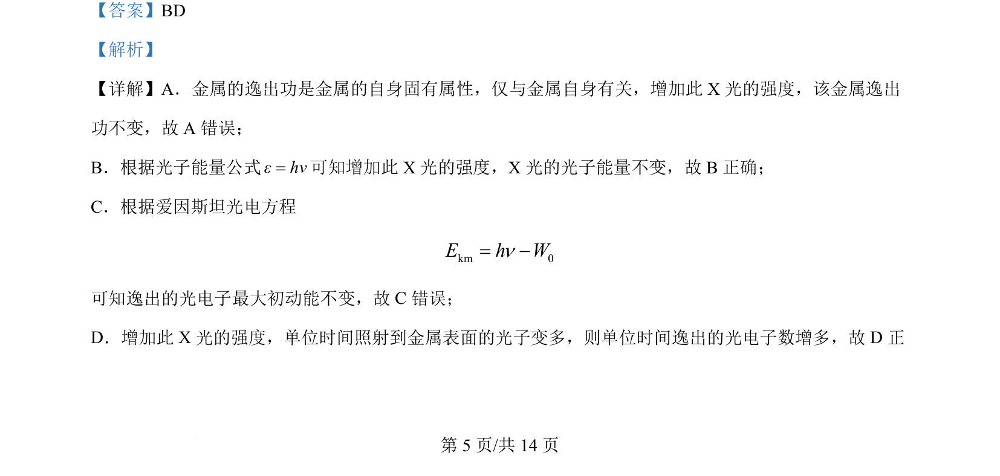
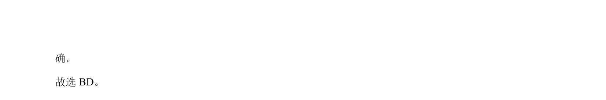

考点：光电效应 逸出功 光子能量 光强
光电效应
逸出功
光子能量
光强

本题考查光电效应中光强对逸出功、光子能量、最大初动能和光电子数的影响。


📄 原 PDF 第 5 页：素材/真题/吉林/2008-2024·（吉林）物理高考真题/2024年高考物理试卷（辽宁）（解析卷）.pdf
素材/真题/吉林/2008-2024·（吉林）物理高考真题/2024年高考物理试卷（辽宁）（解析卷）.pdf